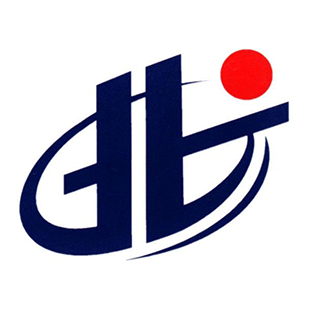

本校的 iOS Club 是一个由热爱移动应用编程、喜欢创新与科技的同学组成的社团，信息科学与工程学院的杨晶晶和曹宁老师负责指导，60名大一到大三的同学组成。在社团中大家可以分享交流移动应用开发技术，社团不定期的提供技术沙龙，在沙龙上同学们可以尽情的分享近期关于移动应用开发的经历以及自己对于互联网信息化的观点。本校的 iOS Club 是一个面向全校学生的社团，在日常的学习和编程外，也会组织社团成员参加国内外计算机编程类的比赛，鼓励同学们为学校争光，同时也可以为自己日后找工作增加砝码。同时不定期举办 Apple 公司的活动，如举行 WWDC 时组织大家一起观看，分享最新的关于移动应用开发的技术与产品。社团主张由老师指导为辅，同学们为主，重点培养同学们的自主学习创新能力，社团中加入的新同学由高年级同学帮助学习，形成学习梯队。社团的活动场所在东校区苹果（iOS）实验室 C508 和东校区移动创新实验室 B509，活动场所开放的时间为早上8:00至晚上9:40.
指导老师
杨晶晶
邮箱
4247187@qq.com